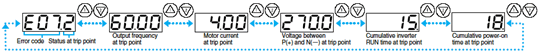

| Name | Cause(s) | Display on digital operator | Display on remote operator/copy unit |
|
|---|---|---|---|---|
| Over-current protection | The inverter output was short-circuited, or the motor shaft is locked or has a heavy load. These conditions cause excessive current for the inverter, so the inverter output is turned off. |
While at constant speed | ||
| During deceleration | ||||
| During acceleration | ||||
| Others | ||||
| Overload protection *1 | When a motor overload is detected by the electronic thermal function, the inverter trips and turns off its output. | |||
| Braking resistor overload protection |
When the regenerative braking resistor exceeds the usage time allowance or an over-voltage caused by the stop of the BRD function is detected, the inverter trips and turns off its output. |
|||
| Over-voltage protection | When the DC bus voltage exceeds a threshold, due to regenerative energy from the motor, the inverter trips and turns off its output. |
|||
| EEPROM error *2 | When the built-in EEPROM memory has problems due to noise or excessive temperature, the inverter trips and turns off its output. |
|||
| Under-voltage error | A decrease of internal DC bus voltage below a threshold results in a control circuit fault. This condition can also generate excessive motor heat or cause low torque. The inverter trips and turns off its output. |
|||
| CT(Current transformer) error | If a strong source of electrical interference is close to the inverter or abnormal operations occur in the built-in CT, the inverter trips and turns off its output. |
|||
| CPU error | When a malfunction in the built-in CPU has occurred, the inverter trips and turns off its output. | |||
| External trip | When a signal to an intelligent input terminal configured as EXT has occurred, the inverter trips and turns off its output. |
|||
| USP error | An error occurs when power is cycled while the inverter is in RUN mode if the Unattended Start Protection (USP) is enabled. The inverter trips and does not go into RUN mode until the error is cleared. |
|||
| Ground fault | The inverter is protected by the detection of ground faults between the inverter output and the motor during power-up tests. This feature protects the inverter only. |
|||
| Input over-voltage protection | When the input voltage is higher than the specified value, it is detected 60 seconds after power-up and the inverter trips and turns of its output. |
|||
| Instantaneous power failure | When power is cut for more than 15ms, the inverter trips and turns off its output. If power failure continues, the error will be cleared. The inverter restarts if it is in RUN mode when power is cycled. |
|||
| Temperature error due to low cooling-fan speed |
The inverter will display the error code shown on the right if the lowering of cooling-fan speed is detected at the occurrence of the temperature error described below. |
|||
| Inverter thermal trip | When the inverter internal temperature is higher than the specified value, the thermal sensor in the inverter module detects the higher temperature of the power devices and trips, turning off the inverter output. |
|||
| Gate array error | Communication error has occurred between CPU and gate array. | |||
| Phase loss detection | One of three lines of 3-phase power supply is missing. | |||
| Main circuit error *3 | The inverter will trip if the gate array cannot confirm the on/off state of IGBT because of a malfunction due to noise or damage to the main circuit element. |
|||
| IGBT error | When an instantaneous over-current has occurred, the inverter trips and turns off its output to protect main circuit element. |
|||
| Output phase loss protection *5 | Output Phase Loss Logic Detection (There are undetectable terms of use.) | |||
| Thermistor error | When the thermistor inside the motor detects temperature higher than the specified value, the inverter trips and turns off its output. |
|||
| Braking error | The inverter turns off its output when it can not detect whether the braking is ON or OFF within waiting time set at b024 after it has released the brake. (When braking is enabled at b120) |
|||
| Emergency stop *4 | If the EMR signal (on three terminals) is turned on when the slide switch (SW1) on the logic board is set to ON, the inverter hardware will shut off the inverter output and display the error code shown on the right. |
|||
| Low-speed overload protection | If overload occurs during the motor operation at a very low speed at 0.2 Hz or less, the electronic thermal protection circuit in the inverter will detect the overload and shut off the inverter output. (2nd electronic thermal control) (Note that a high frequency may be recorded as the error history data.) |
|||
| Modbus communication error | If timeout occurs because of line disconnection during the communication in Modbus-RTU mode, the inverter will display the error code shown on the right. (The inverter will trip according to the setting of "C076".) |
|||
| Out of operation due to under-voltage |
Due to insufficient voltage, the inverter has turned off its output and been trying to restart. If it fails to restart, it goes into the under-voltage error. |
|||
| Easy sequence function Error | Error indications by protective functions with the easy sequence function used. | |||
| Expansion card 1 connection error | An error has been detected in an expansion card or at its connecting terminals. | |||
| Expansion card 2 connection error | ||||
- *1
- Reset operation is acceptable 10 seconds after the trip.
- *2
- Check the parameters when EEPROM error occurs.
- *3
- The inverter will not accept reset commands input via the RS terminal or entered by the STOP/RESET key. Therefore, turn off the inverter power.
- *4
- The inverter will not accept the reset command entered from the digital operator. Therefore, reset the inverter by turning on the RS terminal.
- *5
- Only SJ700D Series.
Status Display
| Code | Description | Code | Description |
|---|---|---|---|
| 0 | Reset | 5 | f 0 Stop |
| 1 | Stop | 6 | Starting |
| 2 | Deceleration | 7 | DB |
| 3 | Constant Speed | 8 | Overload Restriction |
| 4 | Acceleration | 9 | Forcible or Servo-on |
How to access the details about the present fault
